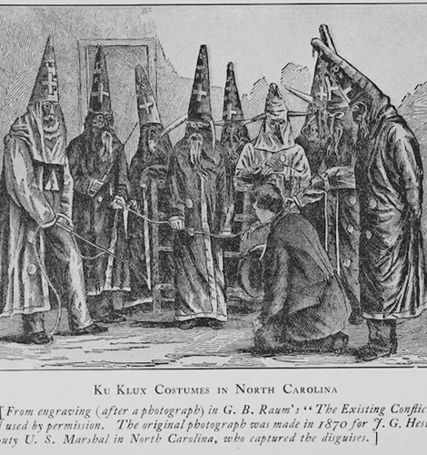
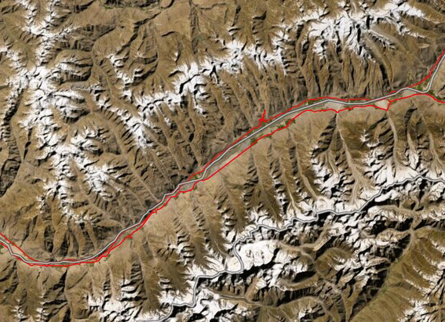
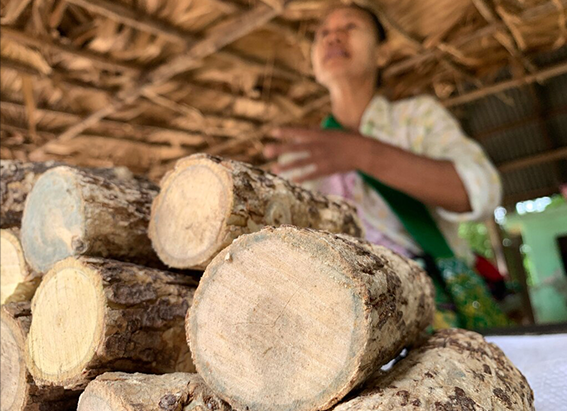

NATIONAL GEOGRAPHIC
This U.S. governor was impeached for cracking down on the KKK
HISTORY & CULTURE
- 
A century and a half ago, North Carolina’s Ku Klux Klan was ascendant. Fueled by backlash to Reconstruction, groups of masked men roamed the state, terrorizing and murdering Black citizens and government officials opposed to the Klan violence. Governor William W. Holden, a Republican who supported Black suffrage (despite opposing it prior to the Civil War), attempted to stop the lawlessness by appealing to local officials and members of the rival Conservative-Democratic Party, a coalition of opponents to Reconstruction. But the outrages mounted, culminating in a string of high-profile assassinations.
In May 1869, a group of men shot and killed “carpetbagger” Sheriff O.R. Colgrove of Jones County. Soon after, M.L. Shepard, the county’s Justice of the Peace, was gunned down, and several of his men wounded. In February 1870, town councilman Wyatt Outlaw, the leading Black leader in Alamance County, was lynched by about 60 members of the White Brotherhood, outside the courthouse in the town of Graham. The assassins left a note on the Republican mayor’s door that he’d be next.
Conservative newspapers downplayed the violence or claimed it was the work of Union League members in disguise. If charges were brought, the suspects walked free thanks to fake alibis, witness intimidation, or rigged juries.
The final straw was the shocking murder of Republican State Senator John W. “Chicken” Stephens. The senator was ambushed at the Caswell County courthouse, where he was attacked and murdered by a group of Klansmen. When the body was discovered, the authorities took little action to uncover the culprits (it was later revealed the man who lured Stephens to his death was the county’s former sheriff).
“In Caswell and Alamance, the Klan pretty much overthrew the government,” says William C. Harris, a historian based in North Carolina and the author of a biography of Holden. “Stephens’ killing was the thing that got Republicans to move.”
Holden and the state’s Republicans determined that military intervention was the only solution. The governor proclaimed Alamance and Caswell to be in a state of insurrection and declared martial law. Holden then asked President Ulysses Grant to intervene, but the sluggish federal response led the governor to instead muster a state militia
The Kirk-Holden War
Holden enlisted the help of George Washington Kirk, a colonel who’d commanded a group of Union troops in the region during the Civil War. Kirk was notorious among the state’s Conservatives as “a guerilla bandit from East Tennessee” as one paper called him, who seized the property of Confederate supporters in the Western North Carolina mountains.
“Kirk was not the best choice as far as settling things down,” says Harris.
Kirk assembled more than 600 soldiers, and over a few weeks in July 1870, the army rounded up more than 100 Klan members suspected of violence including many respected figures and Holden attempted to try them in military courts. Despite public concerns that the operation could turn violent, little blood was shed during the Kirk-Holden War, as it became known. But the backlash to the operation was fierce.
Holden’s critics saw the campaign as an outrageous act of tyranny or, at best, a voter intimidation tactic ahead of the August state congressional election. Even the New York Times, largely supportive of a Klan crackdown, criticized how “the Executive of a reconstructed State may usurp functions not contemplated by the Constitution under which he was elected, and may become the despotic master of a people whom he is supposed to serve.”
Holden lifted martial law shortly after the election and revoked the insurrection proclamations on November 10, but his rivals were not interested in reconciliation.
When the new legislature met, the lawmakers voted 60 to 46 to impeach Holden. Eight articles of impeachment were brought against the governor, including the unlawful declaration of insurrection and the denial of procedural rights of those arrested.
Comments :
- john Very good
- john Very good
Leave a Reply
Your email address will not be published. Required fields are marked*
Related posts:
-
The unexpected twists on a writer's 24,000 mile walk across the world
The daily GPS tracks logged by the Out of Eden Walk, a 24,000-mile foot journey across the world along the pathways of our Stone Age ancestors, contain hidden stories in map form.
View article -
In Myanmar, everyone swears by this natural skin cosmetic
It is impossible to say. The primordial evidence the hides of Stone Age peoples has long since turned to dust. Yet clues remain. A rouge-colored mineral called ocher has been discovered, finely ground and ready for application
View article -
The holidays can take a toll on your gut health. Here’s how to deal.
What you consume affects your gut microbiome, a community of microscopic organisms including bacteria, viruses, fungi, and parasites. And its importance can’t be overstated. This tiny world helps protect the body against
View article